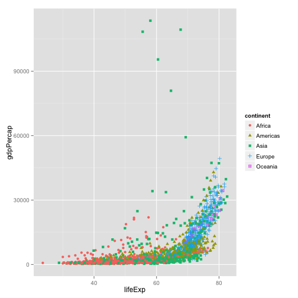
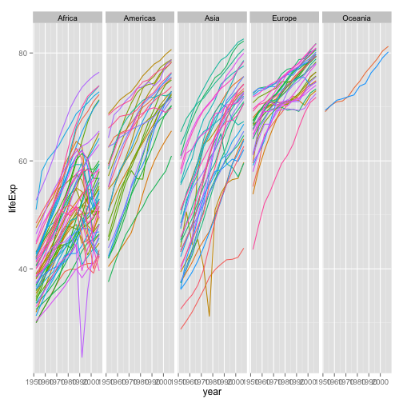

R for reproducible scientific analysis
Creating publication quality graphics
Learning Objectives
- To be able to use ggplot2 to generate publication quality graphics
- To understand the basics of the grammar of graphics:
- The aesthetics layer
- The geometry layer
- Adding statistics
- Transforming scales
- Coloring or panelling by groups.
Plotting our data is one of the best ways to quickly explore it and the various relationships between variables.
There are three main plotting systems in R, the base plotting system, the lattice package, and the ggplot2 package.
Today we’ll be learning about the ggplot2 package, because it is the most effective for creating publication quality graphics.
Let’s start off with an example:
library(ggplot2)
ggplot(data = gapminder, aes(x = lifeExp, y = gdpPercap)) +
geom_point()
Ggplot is based on two principles:
- a grammar of graphics: a set of terms to define the basic components of a plot that can be used to produce figures in a coherent, consistent, and flexible way
- Layers: Different basic components can be logically separated into layers which can be overlaid on top of each other.
In the example, we told ggplot to use the gapminder dataset. As second argument we gave it the aes function, which stands for aesthetics. The aes function specifies how your data are represented visually: which variables to plot on each axis, as well as the color, size, shape, and transparency, which we’ll change soon. We then used the + operator to add a geometry layer, specified by a function starting with geom, in this case, a layer of points.
This is a general rule. Anything we specify inside the first function, ggplot, becomes a global setting for the figure. Anything that we add with + is built up in layers (consecutively).
Next, lets color the points by continent:
ggplot(data = gapminder, aes(x = lifeExp, y = gdpPercap)) +
geom_point(aes(color=continent))Here, we’ve specified that we want change the color aesthetic for the points layer. We’ve told it to color the points based on the continents column. We can also change the shape fo the points:
ggplot(data = gapminder, aes(x = lifeExp, y = gdpPercap)) +
geom_point(aes(color=continent, shape=continent))
Currently it’s hard to see the relationship between the points due to some strong outliers in GDP per capita.
We can change the scale of units on the y axis using the scale functions. These control the mapping between the data and the aesthetics:
ggplot(data = gapminder, aes(x = lifeExp, y = gdpPercap)) +
geom_point(aes(color=continent, shape=continent)) +
scale_y_log10()
We can also add statistical transformations and data summarisations to our plots. We’ll add the fits of linear models for each group by adding the geom_smooth geometry layer:
ggplot(data = gapminder, aes(x = lifeExp, y = gdpPercap)) +
geom_point(aes(color=continent, shape=continent)) +
scale_y_log10() + geom_smooth(method="lm")
Whoops that didn’t quite do what we wanted. That’s because the grouping has only been applied to the geom_point layer. Let’s change that so it’s a global option:
ggplot(data = gapminder, aes(x = lifeExp, y = gdpPercap, color=continent)) +
geom_point() + scale_y_log10() + geom_smooth(method="lm")
It’s still hard to see what’s going on, That’s because we’re currently plotting all years of collection. Another useful thing we can do with ggplot is facet our data: create panels based on different groups.
Let’s take a look at how life expectancy has changed over time for each country, and create a panel, or facet, for each continent:
ggplot(data= gapminder, aes(x=year, y=lifeExp, color=country)) +
geom_line() + facet_grid(. ~ continent)
We can see nice upward trends across all countries across all continents, with a few unfortunate downward spikes corresponding to wars.
The facet_grid layer took a formula as its argument, the . corresponds to “all variables in the data”, and by putting “continent” on the right of the formular, we told ggplot to arrange the panels along the x axis. If we put “continent” in the y-position of the formula, the panels would have been arranged along the y-axis.
Currently, there are too many different countries for the legend to render properly. Since we don’t care so much about the particulars of each country, lets turn the legend off:
ggplot(data= gapminder, aes(x=year, y=lifeExp, color=country)) +
geom_line() + facet_grid(. ~ continent) + theme(legend.position="none")
To save an image, we can either use the save button inside of RStudio, or from the interactive console (or script) using the ggsave function:
ggsave("lifeExp-vs-time.pdf")This is just a taste of what you can do with ggplot2. A more detailed tutorial can be found here. Once you get a handle of the different layers and the grammar of graphics, the reference list of functions will be useful.
Challenge 1
Create density plots of GDP per capita, colored by continent. Hints: - Use ggplot to set up the basic plot. - Use aes to tell ggplot what the axes of the plot are (you will only need the x-axis). - Use aes to specify the color grouping. - The geometry layer for density plots is geom_density.
Advanced: - The fill aesthetic will color the area under the curve. - Transform the scale of the x-axis to more easily visualise the difference between continents
Challenge 2
Add a facet layer to panel the density plots by year. Hint: facet_wrap will be more useful than facet_grid.